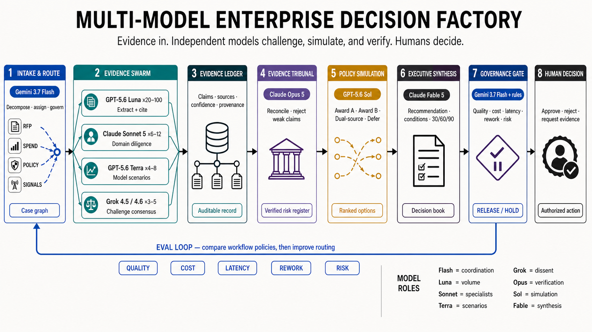

The reservation price ρ is a scalar field over budget remaining × time to reset. Move the sliders: each provider's cell picks a spending mode, the mode sets ρ, and ρ rotates the admissibility line on the action plane below. Companion to TOKEN-ALLOCATION-STRATEGY.md §4.1–4.2.

For a strategic supplier award, acquisition screen, or operating-model decision: every model contributes a bounded evidence artifact; no model can approve an irreversible action.
The ρ policy below chooses the operating shape: DEEP reserves Fable, Opus, and Sol for difficult synthesis; BREADTH expands Luna and Sonnet evidence workers; CONSERVE keeps work to low-cost intake and extraction; SPEND-DOWN runs independent review and scenario sweeps. Each run should record quality, cost, latency, rework, and unresolved-risk scores so the next routing policy is empirically selected rather than assumed.
Fill encodes surplus (budget bucket − time bucket): the diagonal is on-pace, above it is surplus, below is deficit. The label names the mode. Click any cell to jump there.
| Mode | ρ | Meaning | Effort & actions |
|---|
The gate U = value / cost ≥ ρ is a line through the origin with slope ρ. It rotates down as a window empties (admitting the lower right) and up when the ledger tightens.
Three canonical paths across one 5-hour window. The marker shows the current Claude state.